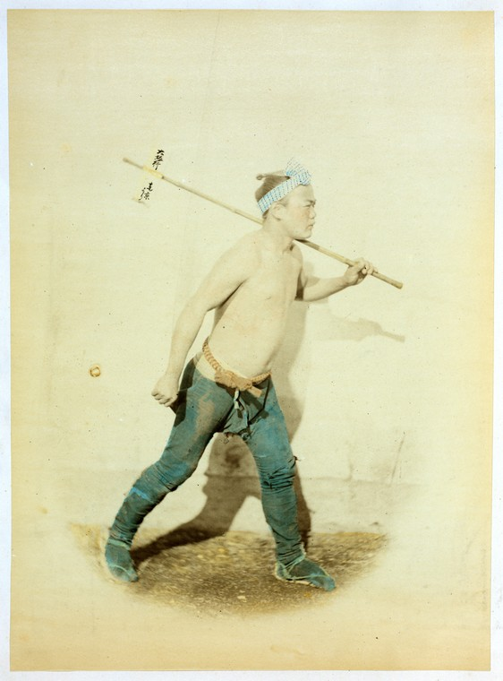

Winter Break of Code Day Ten
A couple of days ago, Jake, one of the brilliant full-timers on Open Whisper Systems, looked up from his laptop and asked me with a smile, “So, Yoko, what’s your life story? How did you come to love humans so much?” It was a whimsical way of asking why I do what I do and why I am here. Having studied Human Computer Interaction and being a user experience (UX) designer, I’ve been asked variations of this question many times before. But it was on this trip I realized my answer needs a little probing.
I’ve always felt the need to alleviate unnecessary frustrations caused by poorly designed furniture, software, and signage. I’m constantly re-organizing items in my apartment and I appreciate the little clues hikers leave on trails to lead others to the correct path. I distinctly remember racking my young brain at the age of six or seven to build a calendering system that would work for any month of the year (come to think of it, I was prototyping!). Granted, the solution wasn’t brilliant, but it tells me I always enjoyed organizing information and simplifying things to their core functions.
Here at Winter Break Of Code, I realized the other side of the equation – the important role UX designers play in helping the “good” emerging technology come to life. I came here knowing very little about information security or cryptography. I didn’t know a thing about public versus private keys, how fingerprints, elliptic curves, or the axolotl protocol work. And despite the generous knowledge sharing by the likes of Trevor and Christine, I still don’t understand much about these topics. So why am I here and what am I doing?
Je ne suis pas d’accord avec ce que vous dites, mais je me battrai jusqu’a la mort pour que vous ayez le droit de le dire - Voltaire
I do not agree with what you have to say, but I’ll defend to the death your right to say it. - Voltaire
Private communication throughout history
Since the development of writing 5000 years ago, humankind has relied on various means (often through great effort and danger) to keep correspondence private and secure (confidential, untampered, and authenticated). Take a look at seals, for example (emblems, not pinnipeds). The use of seals can be traced back to the world’s first civilizations, and seals are still used widely to this day – either on their own or next to handwritten signatures. In some parts of the world (East Asia, Central and East Europe), they are used for official documents.
The wax seal, the most commonly recognized form of seal in the western world, was at first only the privilege of aristocrats. Seals bore a unique emblem, and the signet ring used to press the wax was destroyed after the person’s death in order to prevent forgeries. By the 13th century, it became the de facto standard used widely by merchants and individuals to authenticate official agreements such as contracts and wills. By the post-medieval period, the wax seal was widely used to keep personal letters confidential, as well as to authenticate official documents.
Similarly, from ancient history to the modern day, personal messengers (aka couriers) have been used to deliver a simple letter or a message in order to ensure speed, security, verification, and authenticity. (Supposedly, the term Marathon is derived from the legend of a Greek messenger who was sent from the battlefield of Marathon to announce Athens’ victory over Persians.)

Fast forward to today’s age. Though the form factor has changed, the challenges and the needs for secure and private communication remain highly relevant and have become even more complex in the digital world we live in.
Having a point of view
The folks at Open Whisper Systems truly believe that state-of-the-art encryption is not just for the techies and the paranoids of the world. It’s meant to be available and simple to use for anyone who wants or needs it. It has already helped many activists and journalists around the world as well as “regular” users.
Whether one puts technology on a pedestal or not, there’s no denying it has drastically re-shaped the way we live, and it will most likely continue to do so. Just like anything, technology itself is not inherently good or evil. It’s what we do with it. Companies can decide to make messaging encrypted by default or not. Individuals can decide whether to adapt and support causes and products they believe in. And designers can decide to work on technology that brings the society to the more advanced state. Just like people and objects have physical appearances, software needs interfaces to let their DNA be known to the world. But unlike people or objects, software is often helpless in explaining itself. The essence of the product must be presented intuitively and with delight for it to be adapted widely. Technology is not inherently cumbersome or frustrating. Technology is only frustrating to use when it’s not given the proper TLC. That is where the designers and writers come in.
Various mentors of mine have told me to always have a point of view with my design. Being decisive is not my forte, but I’m taking a stance on our right to private communication, and I’m honored to work on this project, however small my contribution might be.
Workation is better than a regular vacation
For those of you who were concerned I’d be working too much during my break, I can assure you this has been the best thing I could ask for at this moment in my life. I have not been this inspired and challenged with such intensity for a long time. This was the first open source project I’ve had the opportunity to be part of, and to say I was nervous would be an understatement. I am grateful for the team who guided me patiently and gave me invaluable feedback. It’s an experience I would repeat in a heartbeat.
Despite everyone accomplishing a lot on his or her respective work goals, somehow we found ways to explore this beautiful island. I’m in awe of how many items I crossed off my bucket list without even realizing it. I’ll go home with memories of waking up to the sounds of roosters, running barefoot on the beach, epic hiking trips to a waterfall, paddling amongst sea turtles – as well as fresh perspective for work, and a clear list of skills to improve and things to learn.
I hear tomorrow is a scuba and snorkeling day. There goes another thing I can check off from my new year’s resolutions.
A hui hou (until next time),
– Yoko
Kauai, Hawaii
January 22nd, 2015
Disclaimer: Certain historical details may have been altered, omitted, or simplified.